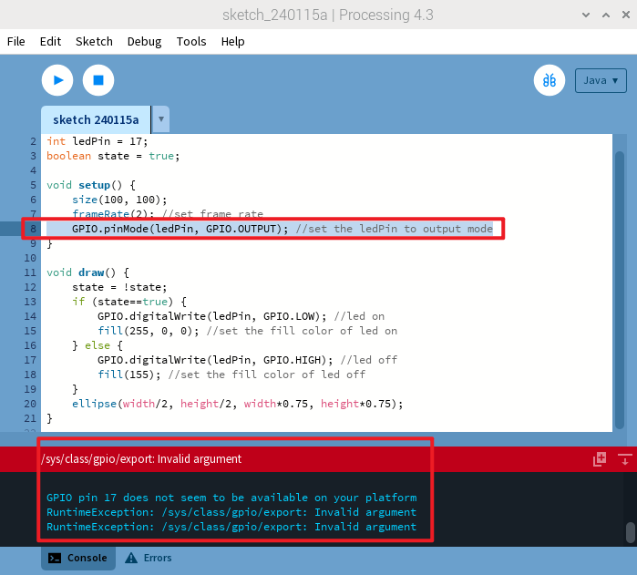
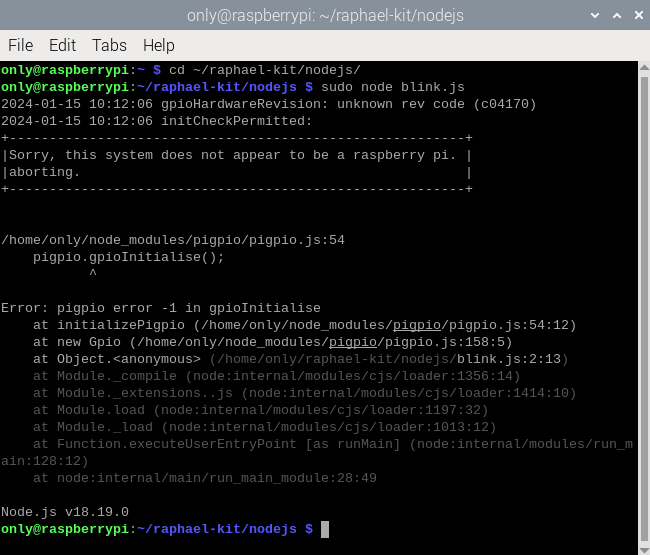

注釈
こんにちは、SunFounder Raspberry Pi & Arduino & ESP32 Enthusiasts Community on Facebookへようこそ！Raspberry Pi、Arduino、ESP32を愛好する仲間たちと一緒に、これらの技術を深く探求しましょう。
参加する理由
専門家のサポート: コミュニティやチームの助けを借りて、購入後の問題や技術的な課題を解決します。
学びと共有: スキルを向上させるためのヒントやチュートリアルを交換します。
独占プレビュー: 新製品の発表やプレビューに早期アクセスできます。
特別割引: 最新の製品に対する独占割引を楽しめます。
フェスティブプロモーションとギブアウェイ: ギブアウェイやフェスティブプロモーションに参加できます。
👉 私たちと一緒に探索と創造を始める準備はできましたか？[ここ]をクリックして、今日参加しましょう！
For Pi 5
Raspberry Pi 5のリリースにより、より強力なモデルが登場しましたが、GPIOにいくつかの変更ももたらしました。標準の40ピンインターフェイスは保持されていますが、新しく統合されたRP1サウスブリッジチップとの接続により機能が変更されました。このカスタムRP1チップは現在、Pi 5の周辺機器を管理しており、さまざまな互換性の問題を引き起こしています。現在、Raspberry Pi組織によって公式に維持されているGPIO Zeroライブラリのみが完全に互換性があります。私たちはこのライブラリに特化した一連のコースを開発しました。
他のプログラミング言語との互換性の問題については、以下の詳細情報をご覧ください。
Processing
Raspberry Pi 5でProcessing 4を使用する場合、GPIOプログラミングに問題が発生します。GPIO関連のコードを実行中に「Invalid argument」や「GPIO pin 17 seems to be unavailable on your platform」といったエラーが発生します（添付の画像を参照）。詳細については、https://github.com/benfry/processing4/issues/807をご覧ください。
Node.js
Node.jsはpigpioライブラリを使用していますが、現在のところRaspberry Pi 5をサポートしていません。詳細については、https://github.com/joan2937/pigpio/issues/589をご覧ください。
{kind=link}
64ビットシステムでは、Raspberry Pi GPIOライブラリのインポートに問題があり、応答しなくなることがあります。詳細については、https://github.com/raspberrypi/bookworm-feedback/issues/91をご覧ください。